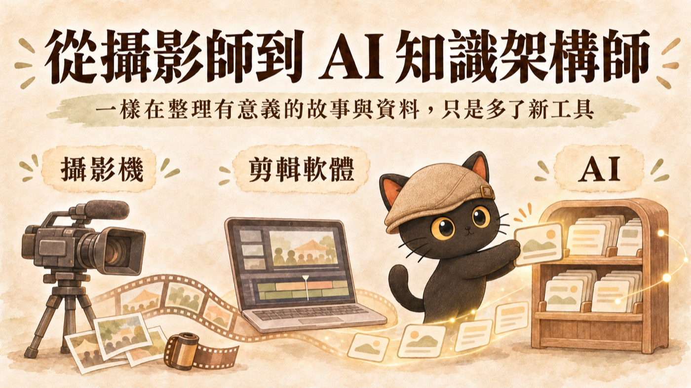
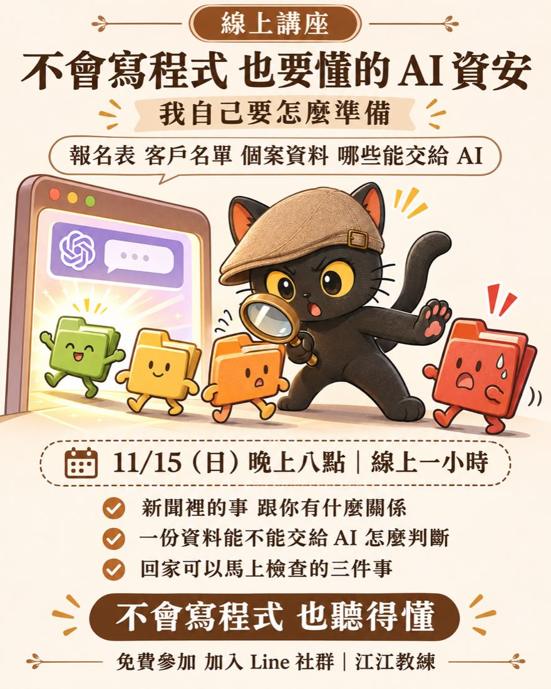

翻到這本永續影響力報告書的最底部，頁尾有一行很小的字：「知識架構、網頁設計：江昱德」。這一行字背後，是整本報告書的分類與連結：社友的人物誌、服務計畫、例會與活動紀錄怎麼排、怎麼互相連到、怎麼讓人與 AI 都讀得懂，都是他負責整理的。
他在意的是別人的故事有沒有被整理好，整理好之後，能不能被找到、被讀懂、被傳下去。
他常說
「無形資產，越分享越豐盛。」
在成為「江江教練」之前，江昱德拿了二十年的相機，拍攝公益組織、文教協會與在地組織的活動紀錄，也拍紀錄片，記錄了許多沒有被寫進新聞的現場。鏡頭讓他看見組織裡兩條知識流動的路：對外，組織怎麼傳遞價值、怎麼倡議與宣導；對內，組織怎麼帶志工、怎麼培訓夥伴、怎麼把理念交給下一個人。
他也看見，很多最珍貴的經驗都留在資深的人腦袋裡，從來沒有被寫下來。人一離開，經驗就跟著消失，接手的人只能從頭摸索。一個組織能不能走得長久，關鍵常常就在這裡。後來他做的每一件事，都在回應這個問題。

從攝影機、剪輯軟體到今天的 AI，他手上的工具一直在換，做的事情始終是同一件：看見、整理、復現。他創立江江教練 AI 知識管理，協助專業工作者與 5 到 10 人的小型團隊，把每天做的事整理成自己的知識庫。他的方法是往後跳一步問「為什麼」，讓藏在經驗裡的判斷浮上來，變成新人看得懂、也能交給 AI 的工作手冊。
在團隊裡，他會先找關鍵主管把一條流程做好，再複製出去，讓組織知識不會因為人員異動而斷掉；成品都放在團隊自己的電腦與帳號裡，資料主權留在組織手上。導入新工具時，他堅持「先刪再自動化」，流程先簡化，再交給工具處理，避免原本的瞎忙因為工具而變得更快。把資源用在真正需要的地方、減少重複與浪費，這個原則本身就和永續的精神相通。
把你的判斷拿出來。散在文件、會議、對話裡的做法與標準，AI 幫你找出來。
存成你的知識庫。每次做完一件事，知識庫就厚一點。
讓 AI 照你的標準做事。知識庫建起來之後，AI 才能照你的方式出手。
他相信好的知識應該讓更多人用得上。他每月固定舉辦兩場免費線上講座，做 AI 教育的推廣與普及，讓還沒有預算的人也能先開始。2026 年 11 月的一場是「不會寫程式，也要懂的 AI 資安」，對象是不會寫程式、工作會碰到客戶或個案資料、已經在用 AI 的人，例如行政、社工、中小企業主與活動主辦；他把資安新聞拉回日常的決定：一份資料能不能交給 AI、表單與試算表的權限怎麼設、貼給 AI 過的金鑰或密碼怎麼處理。基礎課設計成用手機就能上，降低數位落差的門檻。授課足跡從嘉義縣勞青處青創課程、臺中市女兒館、新北市公共藝術推廣計畫，到文藻大學、社區電腦推廣教育基金會與永力扶輪社，對象涵蓋青年創業、女性培力與社區教育。

他現在也在推動社會議題的知識庫：把議題相關的知識整理好，讓倡議者都可以直接使用。他期許這份共用的整理，能讓投入社會議題的人少花力氣在找資料，把心力留給倡議本身；倡議者不必各自再讓 AI 從頭蒐集、整理一次，也就減少了 AI 運算與 token 的消耗。
在永力社，他負責這本永續影響力報告書的知識架構與網頁設計。每一位社友的人物誌、服務計畫與影響力數字，怎麼分類、怎麼互相連結、怎麼讓人讀得懂、找得到，是他在背後一塊一塊排好的。2026 年 4 月 27 日第 38 次線上例會，他上台分享「如何用 AI 協助撰寫影響力報告書」，把報告書背後的做法攤開給社友看，讓每個社都有機會用同一套方法整理自己的影響力。
永力社相信「以職業服務社會」，他用自己的職業回應這份扶輪精神。如果用 ESG 來對應：社會面，是讓知識可近、可學，從免費講座延伸到社會議題知識庫；治理面，是讓組織經驗不因人員異動而斷掉；環境面，是先刪再自動化、共用知識減少重複的運算。
他最遠大的夢想，是累積知識資產。放在這本報告書裡，是一件很具體的事：17 位社友的人物誌、7 項服務計畫、54 場例會與活動，已經照同一套分類與連結放好，中英文對照，AI 客服也能照著回答。下一年度有新社友加入、有新的服務計畫，只要照同一個架構放進來，不必從頭再整理一次，社友們的影響力就能一年一年接著累積。
他推動的社會議題知識庫也是同樣的想法：整理一次，讓更多倡議者直接使用。這就是他常說的「無形資產，越分享越豐盛」。